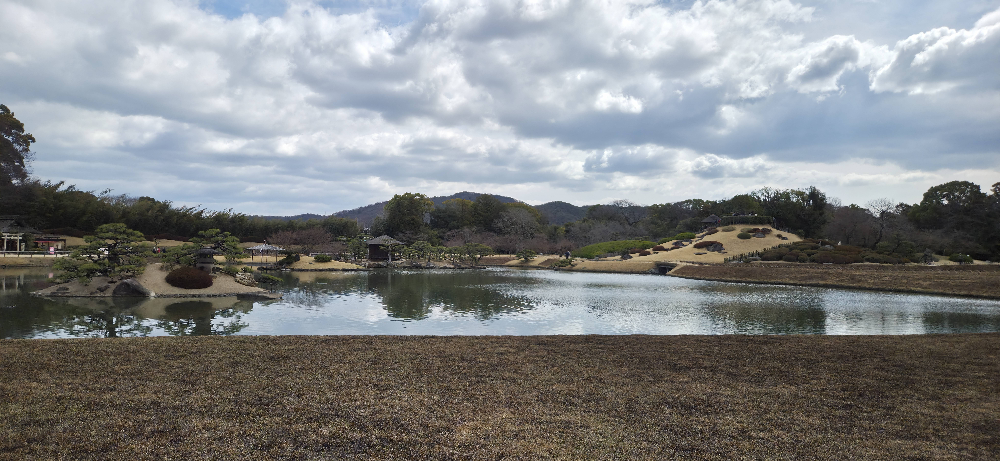
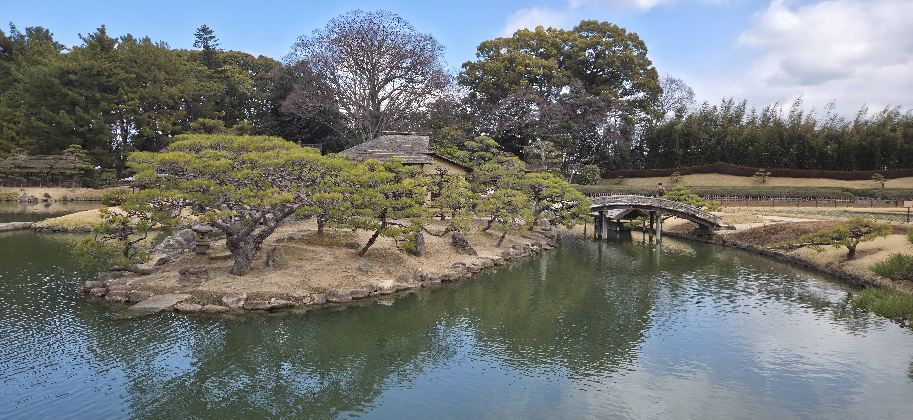
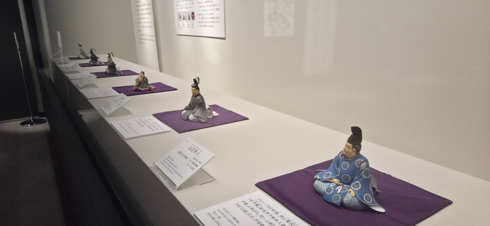
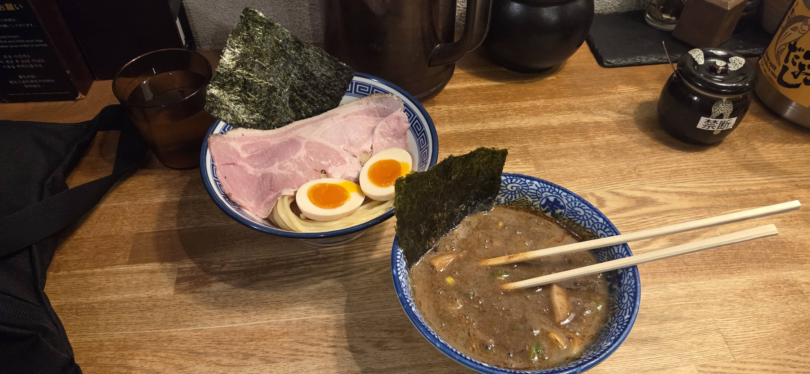
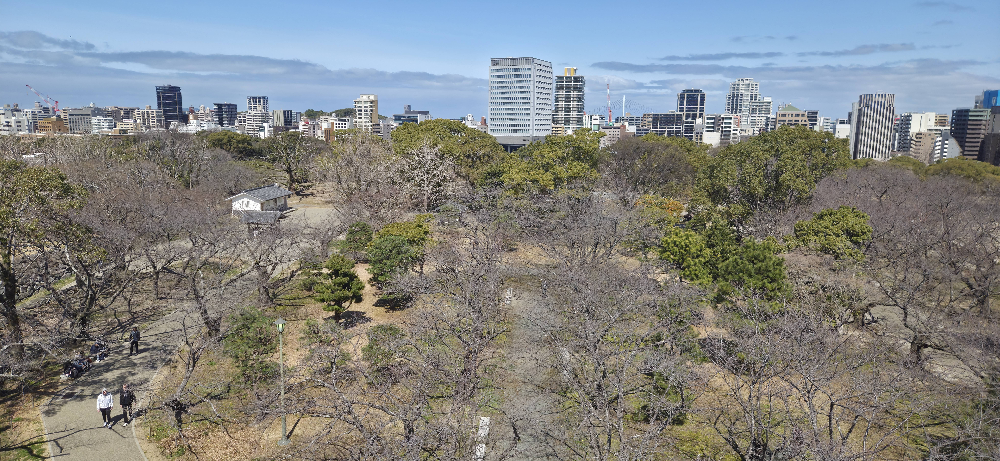

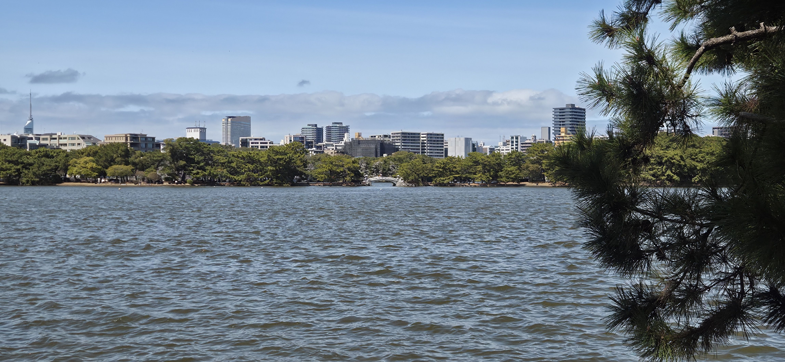
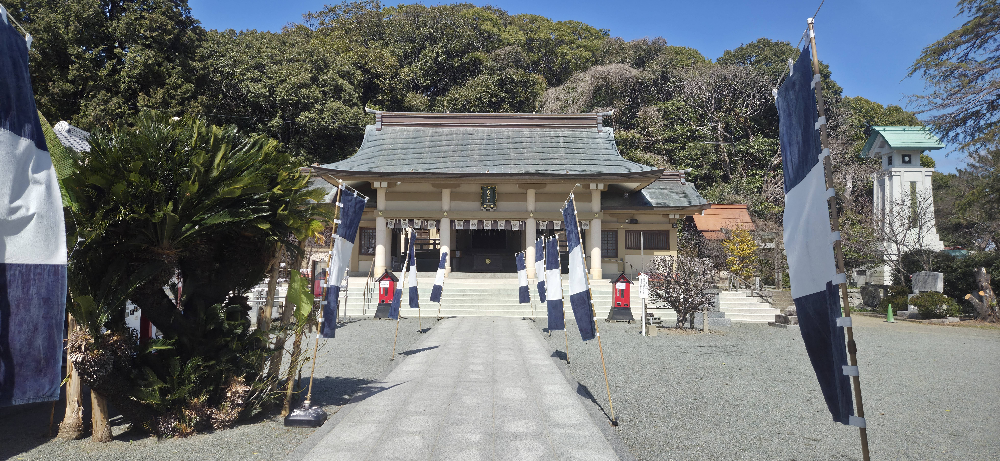
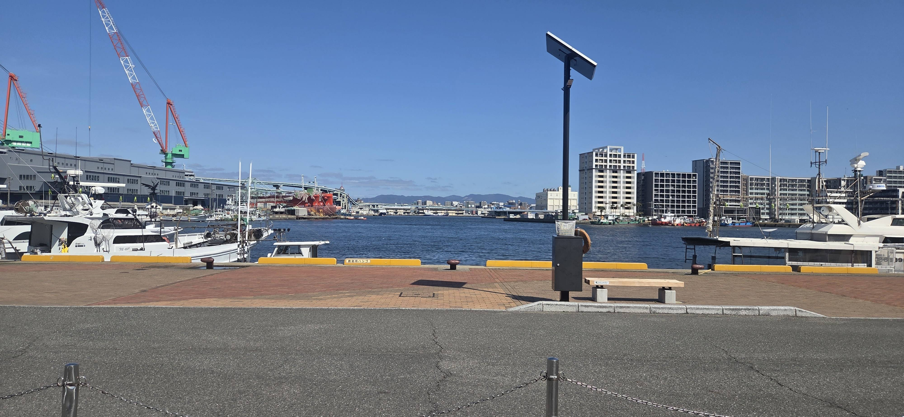
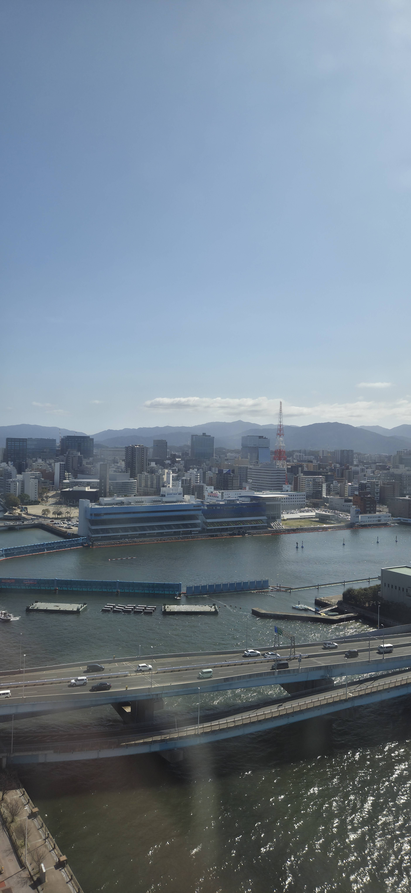
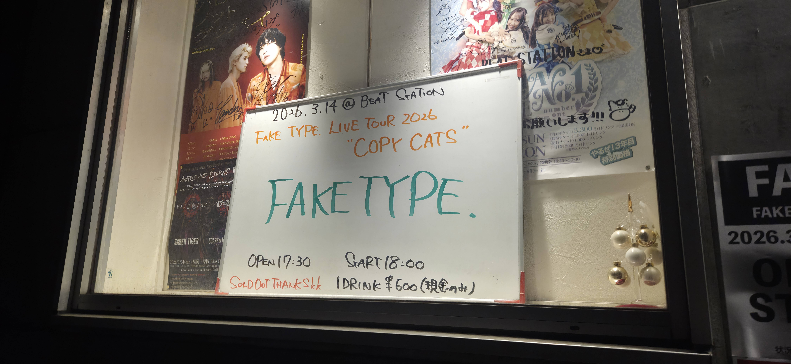
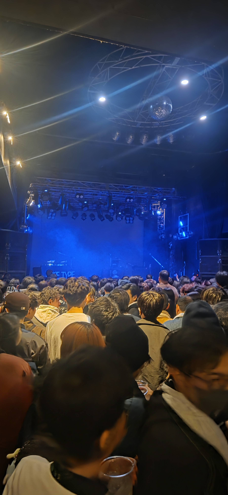
Fukuoka Day 1 and 2
Today the plan was to explore Okayama and go to Fukuoka, so i got up, and left the hostel relatively early, and walked over to the station to leave my luggage there for the morning, while i was there i grabbed some breakfast. I had seen that there was a bakery called "the little mermaid". Which was obviously taking insporation from a danish
bakery, so i had to try it out in the name of science. I did have to instantly deduct a couple points for not having any cinamon products whatsoever, but apart from that the cakes and sandwhiches were relatively nice and good for the price. I then walked the 20minutes over to to the castle and then gardens. The gardens were originally built in the 17th century to replicate rolling fields,
with succesive lords of the castle adding onto it with what was fashionable at the time. This leading to a patchwork of different gardens. With still some of the old fields existing in the middle of the garden. It was very pretty and worth the detour to go there. Across from the garden there was the Okayama prefacture museum, which had alot of similair artifacts to
the tsuyama one, except more, older and more important. There was an exhibition of statues and paintings of the 36 immortal poets, being some of the famous poets of the ancient japanese world. And it was the first time that all statues had been collected in one place, So that was interesting to look and research about. By this point it was getting towards 2pm, so i decided
to head back. When i arrived at the station, something that i would never thought of happened. The shinkansens were delayed, and some of them cancelled. The entire station was in chaos, as every train between Osaka and Fukuoka was halted for over 2 hours, I had arrived towards the end of the of the stoppage, but still when i got to the ticket booth, there was 90 people standing in queue infront of
me. So i hunkered down in a corner and waited an hour to get my ticket.
I had decided for the next week to get an area pass, since ill be using the shinkansen and ferries a decent amount, so using that i reserved a seat on a bullet train once my turn was up. Unfortunately, i misunderstood the ticket and the person at the desk, as the train departed at 1445, not that the train was originally
meant to leave at 14:45, this meant as i was taking my sweet time sitting down and having a nice lunch, the train left. I only realised afterwards, which is annoying. I decided this time to use the machines and figured out eventually how to use them. Unfortunatenly that meant i had to wait about 90mins for my train, since the machine gave me a ticket for a train that would depart after the current
time. So i stood around in the cold for another 90minutes before finally getting on my train. While on the train, i got a message from a reoccuring character now. The french guy from Tokyo and Osaka, he was in Fukuoka, so we decided to meet up for dinner, he had found a nice tsukemen ramen place, and it was indeed really nice, with a rich broth and the noodles were cooked to perfection. This was his last
night in japan before flying to Seoul. So it was good that it was a good location. It turned out that he also was staying at the same hostel as me, so we began heading back. However we decided that it would be a waste not to do something before he left. So we went over to round 1. The arcade place that here had a bunch of other sports that you could do, we decided on table tennis. as we both were saying how
good we were. So we booked an hour of that and played for a good 50mins of it before both tapping out. But it was good fun! We then headed down to the racing sims, and played mariokart for a few rounds because he suggested it and said it was fun, and indeed it was. He did eventually win 3-2. But i totally let him win. After we decided to finally head home as it was getting close to midnight. I said goodbye to
him in the lift then promptly went to bed.
I gave myself a bit of a lie in, as it was a late night before. With the plan today to walk around Fukuoka. I started with heading just over the road to the castle ruins, where in the park next to it there was being held a dog festival/exhibition thing, so there were so many dogs running around enjoying the sun. I grabbed myself a coffee and continued towards the castle.
It itself was ok, with good views of the city, but nothing exceptional. I then headed over to shrine on a hill overlooking the harbour. Since it was only half an hour walk away, i did that. I walked up, down and around the hill ending on the harbour side. So i then chose to walk along the harbour front towards what i thought was a observation tower in the distance, and after some research it was indeed. It was still
early enough in the day, so i took the hour it would take to enjoy the breeze and maybe even have a cheeky ice-cream. It is an industrial port so alot of the water front was barriered off for obvious reasons. But i still enjoyed the bits that i could go along. Not long after i got to the tower and it was free to go up! So even better, the view from the tower towards the sea was very pretty, and with the sun glistening
on the waves it was something. Once back down i headed towards the center to do a bit of shopping, as i had a few hours left before probably the thing i have been most looking forward to the whole trip.
Originally i wasnt planning on going to Fukuoka at all, however i saw that a band of mine that i really like FAKE TYPE. a modern electro-swing/electropop style band, with a relatively small fan base, was playing here
this would be probably the only time ill be able to see them, as i doubt theyll ever do a tour out of japan, and this was the only day within my trip that they are playing. The only issue was, was that i couldnt purchase tickets online, as i didnt have a japanese phone number. So i wasnt even garenteed to get in. So i arrived early and asked the staff working there. They told me to wait, and they looked to see if noone showed up
and luckily someone didnt! So i payed a couple thousand more than a regular ticket, was at the back of the venue, but it was worth it! Chills listening to them. The only complaint was that they do alot of talking and not as much playing, with them having a segment were they left the stage to do a "zoom call" where they tried to guess there own music from a short sample. This segment was close to 15-20mins and i felt like it was a bit
unnecessary to have 10 songs they had to guess. But it could just be the culture with artists. Being a lot more friendly and conversationey, then just there to play music. Which i feel wold be nice, except i dont speak japanese well enough to understand what they were saying. Another fun quirk ive seen is that instead of people just dancing to the music as whats common in europe. They are told by the band what to do, how to wave your hands
how to bop your hand, how fast etc. To every song, which leaves very little place to actually just jam to the music, and your arm gets very sore by the end, as its rude not to do it, but with your hands being up for over an hour it does get to you. But it definitely gives of a cool effect of the whole room dancing together, quite mesmerising. I did of course get a t-shirt after.
Since the concert started at 18:00 there was still time afterwards
to grab dinner. I had found a nice ramen place tucked away inside a building, and i think it was in my top 3 favourite ramens of the trip. The egg especially was the best ive had, with it being marinated in a really rich umami flavour before hand. Once i had finished that i headed back to the hostel, when i got there it turns out there was a "cultural exchange event" where there were cheap drinks and you were encouraged to talk
to a bunch of people, so i happily obliged and spent a couple hours mingeling with all sorts of people, and it was nice to listen to different peoples experiences and how theyve ended up here. After that though it was properly late and i headed to bed in preperation for the next day.